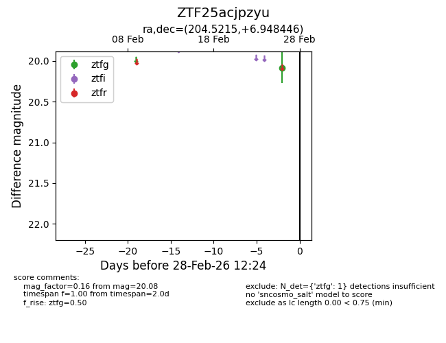
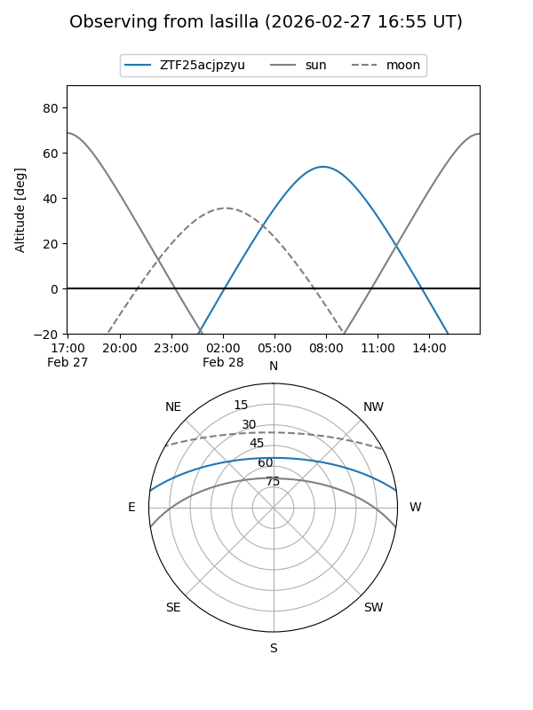
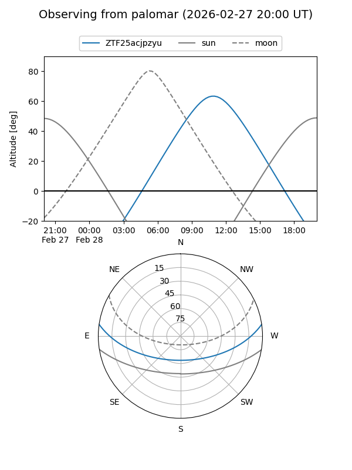
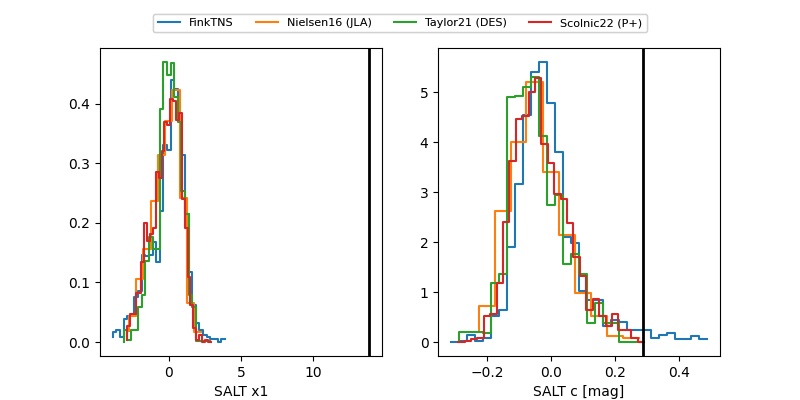

ZTF25acjpzyu
Target ZTF25acjpzyu at 2026-02-28 12:26
Aliases and brokers:
FINK: link
Lasair: link
ALeRCE: link
alt names
ZTF25acjpzyu (ztf,fink_ztf)
Coordinates:
equatorial (ra, dec) = 204.5215,+6.94845
equatorial (HMS+DMS) = 13:38:05.15,+06:56:54.40
galactic (l, b) = (333.8051,+66.98136)
Flags:
Photometry:
last ztfg=20.08
1 ztfg detections
Lightcurve

Visibility


Additional plots
